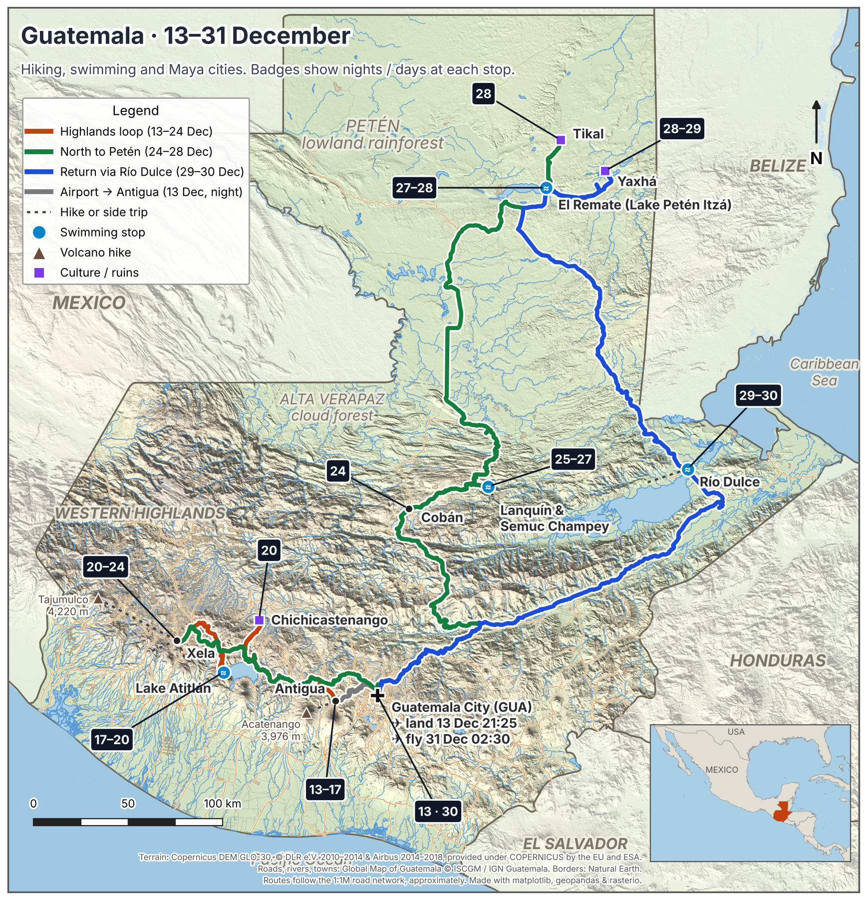
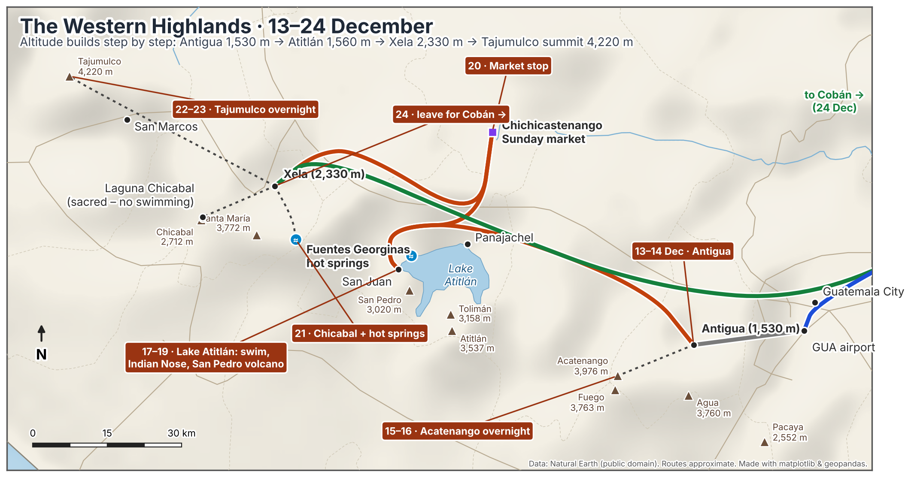
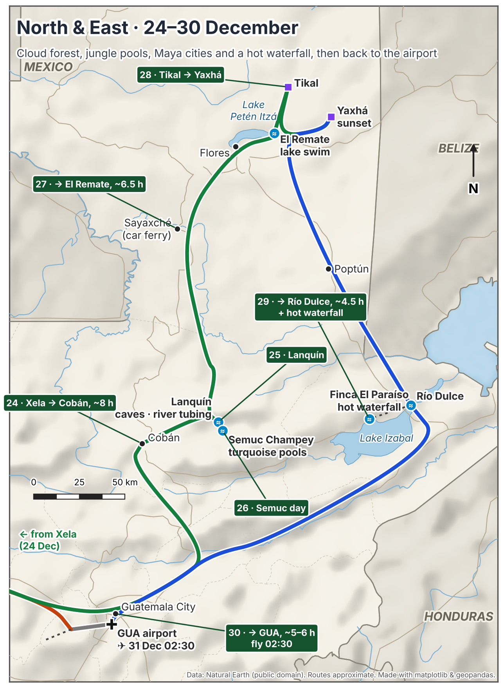

Guatemala · 13–31 December 2026
Two hikers, one rental car, lots of swimming
Version 4, written 23 November 2026. Prices and opening hours were checked online in October–November 2026 and can change. Exchange rate used: about Q7.6 = US$1 (the currency is the quetzal, written GTQ or Q). Photos load from Wikimedia Commons, so you need to be online to see them. Maps are in the
maps/folder of the repository.
Contents 1. The trip at a glance 2. What changed in this version 3. Guatemala in brief 4. Antigua & Acatenango (13–17 Dec) 5. Lake Atitlán (17–20 Dec) 6. Chichicastenango (20 Dec) 7. Xela & Tajumulco (20–24 Dec) 8. Cobán, Lanquín & Semuc Champey (24–27 Dec) 9. Tikal & Yaxhá (27–29 Dec) 10. Río Dulce & the drive home (29–31 Dec) 11. Swimming spots on the route 12. Booking checklist 13. Driving, safety & money 14. Photo & data credits
1. The trip at a glance

gantt
title Guatemala, 13–31 December 2026
dateFormat YYYY-MM-DD
axisFormat %d
section Highlands
Antigua (land 21h25) :a1, 2026-12-13, 2d
Acatenango overnight :crit, a2, 2026-12-15, 2d
Lake Atitlán (swim + 2 hikes) :a3, 2026-12-17, 3d
Chichicastenango → Xela :a4, 2026-12-20, 1d
Chicabal + hot springs :a5, 2026-12-21, 1d
Tajumulco overnight :crit, a6, 2026-12-22, 2d
section North
Xela → Cobán (Christmas Eve) :b1, 2026-12-24, 1d
Lanquín (caves, tubing) :b2, 2026-12-25, 1d
Semuc Champey pools :b3, 2026-12-26, 1d
→ El Remate, lake swim :b4, 2026-12-27, 1d
Tikal → Yaxhá sunset :b5, 2026-12-28, 1d
section Return
→ Río Dulce + hot waterfall :c1, 2026-12-29, 1d
→ GUA, fly 02h30 on 31 Dec :crit, c2, 2026-12-30, 1d
| Date | Where you sleep | Main activity | 🏊 Swim? | Drive |
|---|---|---|---|---|
| Sun 13 | Antigua | Land at 21:25 → night shuttle | – | (shuttle ~1–1.5 h) |
| Mon 14 | Antigua | Explore the town, Cerro de la Cruz | – | – |
| Tue 15 | Acatenango camp | Overnight volcano hike | – | (tour transport) |
| Wed 16 | Antigua | Summit at sunrise, descend | – | (tour transport) |
| Thu 17 | San Juan La Laguna | Pick up car → Lake Atitlán | ✅ lake | ~3 h |
| Fri 18 | San Juan La Laguna | Indian Nose sunrise; Cerro Tzankujil | ✅ lake | – |
| Sat 19 | San Juan La Laguna | San Pedro volcano | ✅ lake | – |
| Sun 20 | Xela | Chichicastenango market → Xela | – | ~2.5 h + ~2 h |
| Mon 21 | Xela | Laguna Chicabal + Fuentes Georginas | ✅ hot springs | short |
| Tue 22 | Tajumulco camp | Overnight hike, highest point in Central America | – | (tour transport) |
| Wed 23 | Xela | Summit at sunrise, descend | – | – |
| Thu 24 | Cobán | Long drive; Nochebuena (Christmas Eve) | – | ~8 h |
| Fri 25 | Lanquín | Lanquín caves, river tubing | ✅ river | ~2 h |
| Sat 26 | Lanquín | Semuc Champey + K'anba cave | ✅ pools | – |
| Sun 27 | El Remate | Drive north; swim in Lake Petén Itzá | ✅ lake | ~6.5 h |
| Mon 28 | Yaxhá (lodge) | Tikal at opening → Yaxhá sunset | – | ~1.5 h |
| Tue 29 | Río Dulce | Drive east; Finca El Paraíso hot waterfall | ✅ waterfall | ~4.5 h + 35 min |
| Wed 30 | (airport) | Drive to GUA, return car, check in ~23:30 | ✅ morning | ~5–6 h |
| Thu 31 | ✈ | Flight departs at 02:30 |
2. What changed in this version
- Your flight leaves at 02:30 on 31 Dec, so the trip really ends on the evening of 30 Dec. Plan to be at the airport by about 23:30 on the 30th, with the car already returned. I moved the long drive home to the 29th–30th and split it with a night in Río Dulce. That still leaves you about 6 hours of buffer.
- You land at 21:25 on 13 Dec. I've replaced the first-night drive with a pre-booked night shuttle (§4). You also don't need a car until the 17th, because the Acatenango tours include transport. Picking up the car in Antigua on the 17th saves 4 rental days and 4 nights of parking.
- Chichicastenango is now a half-day stop on Sunday the 20th, not an overnight stay (§6). That frees a full day for Laguna Chicabal and the hot springs.
- More swimming: a cliff-jump platform at Lake Atitlán, hot springs near Xela, river tubing in Lanquín, the Semuc Champey pools, Lake Petén Itzá, and a hot waterfall on Lake Izabal (§11).
- Spanish: because you both speak it well, many of the guides below can be hired on the spot in Spanish for much less than a pre-booked English tour. Each chapter has a 🇪🇸 tip.
3. Guatemala in brief
Guatemala is the country just south of Mexico, a little larger than Iceland. Your trip crosses three very different landscapes:
- The Western Highlands (13–24 Dec): mountains at 1,500–4,200 m, about 37 volcanoes, and pine and cloud forest. December is dry and sunny, around 20–25 °C by day. Nights get cold, and the volcano camps drop below freezing. Most people here are Maya, speaking K'iche', Kaqchikel, Tz'utujil, Mam and other languages alongside Spanish. Many women wear traje, handwoven clothing whose patterns identify their village.
- Alta Verapaz (24–27 Dec): green, misty cloud-forest hills with coffee and cardamom farms. This is Q'eqchi' Maya country.
- Petén and Izabal (27–30 Dec): hot, humid lowland rainforest where the great Classic Maya cities stood (roughly 200–900 AD), and the Caribbean side around Río Dulce.
A bit of linguistics: many place names are Nahuatl, the language of the Aztec allies who came with the Spanish conquistadors, rather than Maya. Quetzaltenango means "place of the quetzal (bird)". -tenango means "place of"; compare Chichicastenango, "place of the nettles". Atitlán contains atl, "water", the same root as in ahuacatl, which reached English as avocado. Meanwhile, Xela, Semuc Champey and Tikal come from Maya languages. Two layers of naming are visible on the same map.
4. Antigua & Acatenango (13–17 Dec)
 The Arco de Santa Catalina in Antigua, with Volcán de Agua (3,760 m) behind it.
The Arco de Santa Catalina in Antigua, with Volcán de Agua (3,760 m) behind it.
What it is. Antigua was the Spanish colonial capital until the earthquakes of 1773. Today it is a walkable grid of cobbled streets, pastel houses and ruined baroque churches, ringed by the volcanoes Agua, Fuego and Acatenango. It has the best food and services on the trip, which makes it a good base for the first few days.
Sun 13 Dec — arrival at 21:25
Immigration and bags take 30–60 minutes, so expect to leave the airport around 22:30. Don't drive at night, especially on your first evening. Pre-book a transfer:
| Option | Price (checked Nov 2026) | Notes | Book |
|---|---|---|---|
| Gray Line shared night transfer | about US$16 per person, minimum 2 people at night | Door-to-door to your Antigua hotel. May wait for other passengers. | https://www.viator.com/tours/Guatemala-City/Shared-Arrival-Transfer-Guatemala-City-Airport-to-Antigua/d4595-3022ANTAPTHTL |
| Private transfer (per vehicle) | ~US$67 (Civitatis); other listings add a ~US$5 surcharge for 22:00–04:00 | Fastest; driver waits for you | https://www.civitatis.com/en/guatemala-city/transfers · https://www.viator.com/en-AU/tours/Guatemala-City/Private-Trasport-Guatemala-City-Airport-to-Antigua/d4595-140323P9 |
| Uber | ~Q320 one-way (May 2026), varies with surge | Fewer drivers after midnight; expect a 10–15 min wait | Uber app |
| Official airport taxi desk | ask at the desk | Open 24/7, the most reliable fallback | In arrivals |
Mon 14 Dec — Antigua
Walk the Arco de Santa Catalina, La Merced, the cathedral ruins and the market. In the late afternoon, climb Cerro de la Cruz (about 20 minutes up) for the classic view over the town to Volcán de Agua. Sort out any gear you'll rent for Acatenango, and keep the day easy, since you start acclimatising here at 1,530 m.
Tue 15 – Wed 16 Dec — Acatenango overnight ⛰️
 Fuego (left), Acatenango and Agua seen from Pacaya. You'll camp on Acatenango's flank, facing Fuego.
Fuego (left), Acatenango and Agua seen from Pacaya. You'll camp on Acatenango's flank, facing Fuego.
What it is. This is Guatemala's signature hike. You climb about 1,500 m in 5–7 hours to a camp at roughly 3,600 m, directly facing Fuego, one of the world's most active volcanoes. At night it throws lava every few minutes. Before dawn you summit Acatenango (3,976 m). It's hard and cold: bring a down jacket, hat and gloves, or rent them from your operator.
⚠️ Check the status a week before. All climbing was suspended in early August 2026 after a big Fuego eruption, then reopened on 7 August. Official alerts: https://insivumeh.gob.gt
Operators (all depart from Antigua with transport, gear, meals and park fees; book now, because December is peak season):
| Operator | Price | Reputation | Book |
|---|---|---|---|
| OX Expeditions | US$119 per person (Oct 2026); optional Fuego ridge add-on +US$40; "Double Whammy" US$149 | The premium choice, running since 2004. Repeatedly cited for the best guides and gear. | https://www.oxexpeditions.com |
| Wicho & Charlie's | from ~US$97 (older figure; check the current price) | Mid-range. Cabins at base camp, vegan food, warm reviews. | via Viator or the comparison below |
| Soy Tours | Q660 (~US$87) per person, park entry included | Local operator, priced in quetzales; recommended by centralamerica.com | via the comparison below |
| Viator marketplace | US$84–150, 8+ operators, often with free cancellation | Compare recent reviews | https://www.viator.com (search "Acatenango") |
Side-by-side comparison of 12 operators: https://www.thoroughlytravel.com/acatenango-volcano-tour-companies/
🇪🇸 Spanish tip: local operators (e.g. Soy Tours) price in quetzales and are cheaper than the big English-language names. Ask at booking for a guía que hable español; you'll get more of the guide's stories.
Linguistics: Fuego's Kaqchikel name is Chi Q'aq', "where the fire is".
Thu 17 Dec — pick up the car → Lake Atitlán
Collect the car in Antigua (§12 lists the rental options) and drive about 3 hours via the CA-1 highway and Santa Clara La Laguna down to San Juan La Laguna. If you arrive by 15:00, you have time for a first swim.
5. Lake Atitlán (17–20 Dec)
 Lake Atitlán from the summit of Volcán San Pedro, which you'll climb on the 19th.
Lake Atitlán from the summit of Volcán San Pedro, which you'll climb on the 19th.
What it is. Atitlán is a deep lake at 1,560 m filling a huge volcanic crater, with three volcanoes on its south shore: San Pedro, Tolimán and Atitlán. A dozen Maya villages line the shore, linked by lanchas (small boats that work like water taxis). Your base, San Juan La Laguna, is calm and known for its weaving and painting cooperatives. San Pedro (the backpacker village) is next door, and San Marcos (yoga and wellness) is a 10-minute boat ride away.
 Lake Atitlán from San Marcos, close to the Cerro Tzankujil swimming spot.
Lake Atitlán from San Marcos, close to the Cerro Tzankujil swimming spot.
Fri 18 Dec — Indian Nose at sunrise, then swimming 🏊
- Indian Nose (Rostro Maya), 2,550 m. Start around 04:00. It's 30–45 minutes up a short, steep path, then sunrise over the three volcanoes. The community fee is about Q25–50; a local guide is optional at Q50–100. Bring cash: there are no ATMs in Santa Clara or San Juan.
- Pre-booked options (with transport and fees): Turisteando, US$29, from San Juan (https://turisteando.wetravel.com/trips/rostro-maya-indian-nose-hike-san-juan-la-laguna-turisteando-7327314571). Tours With Vick, US$45, rated 9.6/10 "Exceptional" on Travelocity.
- 🇪🇸 Spanish tip: go to the trailhead yourselves and hire a community guide in Spanish for a fraction of the tour price.
- Afternoon: Cerro Tzankujil, San Marcos. This sacred hill is now a nature reserve, 5 minutes' walk from the San Marcos dock. It has clear-water swimming spots and a jump platform about 12 m above the lake, with a lifeguard on duty. Entry is Q20, and hours are 08:00–17:00. Take a lancha from San Juan or San Pedro (about Q20–25).
Sat 19 Dec — Volcán San Pedro (3,020 m) ⛰️
Start early. The climb gains about 1,200 m through coffee farms and cloud forest and takes 4–5 hours up and 3–4 hours down, longer than I estimated before. You register at the park office on the north-west edge of San Pedro La Laguna. Entry is Q100 and a guide is Q150–200 (the office assigns you one, and Spanish-speaking guides are the norm). In the afternoon, have a cool lake swim to finish.
🏊 Swimming in Atitlán: the water is fresh and cool, probably around 20 °C (I'm about 70 % sure of that figure). Swim at designated spots like Tzankujil, away from village docks; the lake has had algae and pollution problems near towns.
6. Chichicastenango (20 Dec)
 Santo Tomás church. Its steps are still used for Maya ceremonies with copal incense.
Santo Tomás church. Its steps are still used for Maya ceremonies with copal incense.
What it is. Chichi is a K'iche' Maya town with one of Central America's biggest markets every Thursday and Sunday. The white church of Santo Tomás was built in the 16th century on top of a pre-Hispanic temple platform. Its steps are still sacred: people burn copal incense and leave flower offerings on them.
Is the Santo Tomás festival worth it if the palo volador doesn't interest you?
It's not worth an overnight stay, but you'll catch it anyway. The festival runs from 13 to 21 December, and the palo volador (men spinning down from a 30 m pole) is its headline act on the 21st. The rest of it is processions of the saint's image with cofradías (religious brotherhoods), masked dances such as the Baile de la Conquista, and fireworks in the square at night. That is good to see, but it also means bigger crowds, higher room prices and firecrackers all day.
Your Sunday the 20th falls on a market day and inside the festival week, so a half-day visit gives you the market plus the festival atmosphere at no extra cost. Then you drive on.
Sun 20 Dec plan
Leave San Juan by about 07:00 and drive ~2.5 h. Spend 09:30–13:30 at the market, church steps and cemetery, then drive ~2 h to Xela, arriving well before dark.

Etiquette: ask before photographing people, especially during ceremonies, and enter the church only by the main door, never the side doors.
7. Xela & Tajumulco (20–24 Dec)

What it is. Xela ("SHEH-la") is Guatemala's second city, at 2,330 m. It's cooler and much less touristy than Antigua, and full of Spanish schools and serious hiking operators. The nickname comes from its K'iche' name, Xelajú, usually glossed "under the ten (mountains)". Its official name, Quetzaltenango, is Nahuatl (§3).
Mon 21 Dec — Laguna Chicabal + Fuentes Georginas 🏊
 Laguna Chicabal, a crater lake sacred to the Mam Maya.
Laguna Chicabal, a crater lake sacred to the Mam Maya.
- Morning: Laguna Chicabal (2,712 m). This misty, emerald crater lake is sacred to the Mam Maya; swimming is forbidden, and you'll see altars along the shore. It's open only 08:00–13:00, so go first thing. Entry is Q20 for foreigners. The walk up from the entrance takes roughly 1–1.5 h each way.
- Afternoon: Fuentes Georginas hot springs. These are steaming volcanic pools in cloud forest above Zunil. Entry is Q60 per adult plus Q25 to park, cash only. Bring a swimsuit, sandals and a towel.
Tue 22 – Wed 23 Dec — Tajumulco overnight (4,220 m) ⛰️
 Tajumulco, the highest point in Central America.
Tajumulco, the highest point in Central America.
The trek starts at about 3,000 m at Tuichán, 2–3 h from Xela. You camp near the summit and walk up for sunrise, often above a sea of cloud. After nine days at altitude you'll be well acclimatised. In Mam the name means "above the clouds".
| Operator | Price | Notes | Book |
|---|---|---|---|
| Quetzaltrekkers | Q800 per person (Q850 from 1 Jan 2027) | Volunteer guides; profits go to a children's charity. There's a mandatory briefing at 18:00 the evening before (21 Dec), with a 05:00 start. | https://www.quetzaltrekkers.com/xela/tajumulco/ |
| Adrenalina Tours | US$125–145 per person (minimum 2); private transport add-on US$150 | One of Xela's longest-running agencies; Spanish-language reviews praise their organisation | https://www.wetravel.com/trips/tajumulco-the-highest-volcano-all-over-central-america-from-xela-adrenalina-tours-59714273 · www.adrenalinatours.com |
⚠️ Access check. Another Xela operator (Monte Verde Tours) lists its Tajumulco trek as unavailable because of conflicts between neighbouring communities, and offers Santa María instead. Quetzaltrekkers says its Tajumulco treks are back and bookings are open. Confirm with your operator a week ahead. If it's off, the backup is Volcán Santa María (3,772 m): a one-day sunrise hike from Xela, with a view down onto the constantly erupting Santiaguito dome.
🇪🇸 Spanish tip: both operators run in Spanish. Adrenalina's office is just off Parque Centro América, if you want to sort out details in person on the 20th.
Thu 24 Dec — Xela → Cobán (~8 h)
Leave at 06:00. The route runs CA-1 → Guatemala City ring road → CA-9 → El Rancho → CA-14 north to Cobán, aiming to arrive by about 14:00. Christmas Eve traffic around Guatemala City can be heavy, so don't dawdle. At night it's Nochebuena, the main Christmas celebration: families eat tamales and drink ponche (hot fruit punch), and at midnight the whole town sets off fireworks at once.
8. Cobán, Lanquín & Semuc Champey (24–27 Dec)

What it is. Alta Verapaz is green, rainy and mountainous. Cobán is the hub; Lanquín is a small Q'eqchi' town in a river valley, and the base for Semuc Champey. Semuc is a 300 m natural limestone bridge over the Río Cahabón: the river vanishes underneath it, and on top sits a staircase of turquoise pools you can swim in.
 The pools at Semuc Champey.
The pools at Semuc Champey.
Linguistics: Semuc Champey is Q'eqchi', usually glossed "where the river hides under the stones/earth", which is exactly what you see.
Fri 25 Dec — Cobán → Lanquín (~2 h) 🏊
The last stretch is a winding mountain road. In the afternoon, go tubing on the river. At dusk, visit the Grutas de Lanquín (Q30 for foreigners), where thousands of bats stream out of the cave mouth.
🎄 It's Christmas Day, so some operators may not run. Message your hostel a few days ahead.
Sat 26 Dec — Semuc Champey 🏊
- Park entry: sources disagree. Q50 for foreigners is the older figure, and one current tour listing says 110 GTQ. Bring Q110 each in cash.
- Leave the car in Lanquín. The last ~10 km are very rough, so take the hostels' 4×4 pickups.
- Suggested day: start with the K'anba cave (candlelit, partly swimming, with a rope swing and waterfall). Then climb to El Mirador (30–40 min, steep) for the classic view from above. Finish by swimming in the pools, before the afternoon crowds or after them.
| Option | Price | Rating / notes | Book |
|---|---|---|---|
| Greengos (hostel by the park entrance) | K'anba cave Q100 (09:15–12:00); "Extreme Tubing" Q100 (14:00–17:00) | 10-minute walk to the pools, so visit them on your own | via the hostel |
| Marvelus Travel: Semuc + K'anba guided tour from Lanquín | US$35–36; park entry (110 GTQ) not included | 8.8–9.0/10 on Expedia/Travelocity; bilingual guide | https://www.expedia.com/things-to-do/from-lanquin-semuc-champey-park-and-kanba-cave-guided-tour.a4569960.activity-details |
| El Retiro (lodge on the river) | cave-and-pools itinerary; ask for the price | riverside lodge | via the lodge |
🇪🇸 Spanish tip: you can buy the K'anba cave entry directly at the cave mouth and join a local guide group in Spanish. Tours leave every half hour.
Where to stay (2 nights, 25–26 Dec): book soon, because Christmas week is busy. Look on https://www.booking.com and https://www.hostelworld.com for "Lanquín" or "Semuc Champey"; staying near the park saves the pickup ride. Greengos and El Retiro (above) are two well-known options.
Sun 27 Dec — Lanquín → El Remate (~6.5 h) 🏊
Leave at 06:30. The route goes north via Raxruhá and Sayaxché, where a small car ferry crosses the Río La Pasión, then on to Flores and El Remate. I'm about 70 % sure the whole road is paved now, so ask at your hostel about current conditions. Arrive mid-afternoon and swim off a dock in Lake Petén Itzá, which is warm, calm and clear around El Remate.
 Lake Petén Itzá near El Remate.
Lake Petén Itzá near El Remate.
Why El Remate rather than Flores? It's 30 minutes closer to Tikal and quieter, with better swimming. Flores (below) is a tiny, pretty island town 30 minutes away. It was the last Maya city to fall to the Spanish, in 1697, and is worth an evening if you have energy.

9. Tikal & Yaxhá (27–29 Dec)
 Temple I ("Temple of the Great Jaguar"), the tomb of king Jasaw Chan K'awiil, who died in 734.
Temple I ("Temple of the Great Jaguar"), the tomb of king Jasaw Chan K'awiil, who died in 734.
What it is. Tikal was one of the greatest Classic Maya cities. Its steep temples rise above the rainforest canopy, and the jungle around them is alive with spider and howler monkeys, toucans and coatis. Yaxhá is smaller and much quieter, between two lagoons, and its Temple 216 gives one of the best sunsets in Guatemala.
Linguistics: "Tikal" is a modern name, often glossed as Yucatec Maya for "at the water hole". The city's own name, read from its hieroglyphs, was Yax Mutal.
Mon 28 Dec — Tikal at opening → Yaxhá at sunset
- Tikal tickets must be bought before you reach the park: Q150 per foreign adult. A sunrise or sunset add-on is +Q100, and sunrise or sunset entry requires an authorised guide. Buy online (international cards pay +2.3 %) or in cash at a bank. Official portal: https://boletos.culturaguate.gob.gt/en/ (choose extranjeros). The park is open 06:00–18:00, and no ticket includes a guide. There are no ATMs at Tikal.
- Plan: be at the gate when it opens at 06:00, which is about 35 minutes from El Remate. Climb Temple IV for the view over the canopy, then walk the Gran Plaza (Temples I and II), Mundo Perdido and the Central Acropolis. Leave around 12:30.
- Guide: an accredited guide hired at the entrance costs about Q150–300 per group. 🇪🇸 In Spanish you have a much wider choice of guides. Pre-booked options include Mayan World Travel's sunrise tour from Flores (US$48, 8.4/10) and Tikal Express's sunrise tour; both exclude tickets.

- Afternoon: drive ~1.5 h to Yaxhá. The last 11 km are a dirt road. Yaxhá entry is Q80 for foreigners, and the official hours are 08:00–17:00. Sunset in late December is around 17:30, after closing, so do it with a guide or tour that has sunset access. Ask at your lodge, or join a group tour arriving from Flores. Tour options from Flores: Adrenalina Tours sunset tour, US$35 (entry extra); Mayan World Travel shared sunset tour, US$25, rated 9.4/10 "Exceptional"; Turisteando, US$29 (https://www.wetravel.com/trips/yaxha-sunset-tour-from-flores-turisteando-40775668). Adrenalina also runs a Tikal + Yaxhá in one day tour for US$55, if you'd rather not drive.
 Temple 216 at Yaxhá, also called the Temple of the Red Hands, more than 30 m tall.
Temple 216 at Yaxhá, also called the Temple of the Red Hands, more than 30 m tall.
- Sleep at Yaxhá so you avoid the dirt road in the dark. Ecolodge El Sombrero sits on the Yaxhá lagoon with solar-powered, mosquito-netted bungalows. It's rated 8.4/10 from 105 reviews on one site, and quotes range from about US$72 to 117 a night for two. Find it on Expedia, Travelocity or Booking.com.
10. Río Dulce & the drive home (29–31 Dec)
Tue 29 Dec — Yaxhá → Río Dulce (~4.5 h) + hot waterfall 🏊
Drive back to Ixlú, then south on the main paved highway via Poptún to Río Dulce, the river town where Lake Izabal drains toward the Caribbean. Aim to arrive by 13:30.
Afternoon: Finca El Paraíso hot waterfall (about 35 minutes west of Río Dulce, on the El Estor road). Here a hot spring pours over a wide waterfall roughly 8–12 m high into a cool river pool. You swim where hot and cold water mix, and the water is very hot right under the falls. Entry is about Q15–20; it closes at 17:00, and it's a 5-minute walk from the gate. Bring water shoes. It can be busy at weekends, but the 29th is a Tuesday.
Where to stay (on Booking.com, checked Nov 2026):
| Lodge | Score | From (2 people, 1 night) | Why |
|---|---|---|---|
| Boatique Hotel & Marina | 9.2, 541 reviews | ~US$47 | On the river, with a pool; also posts self-guided directions to El Paraíso |
| Nanajuana Río Dulce | 9.2, 558 reviews | ~US$33 | Great value |
| Hacienda Tijax Jungle Lodge | "Fabulous", 290 reviews | ~US$76 | Large private reserve, pool, birdlife, restaurant over the water |
| Casa Perico | – | – | Small, quiet eco-hostel reachable only by boat (they collect you) |
Search page: https://www.booking.com/pool/city/gt/rio-dulce.html
Wed 30 Dec — Río Dulce → GUA (~5–6 h), fly at 02:30
- Morning (optional): swim from your lodge's dock, or visit the Castillo de San Felipe de Lara, a Spanish fort from 1652 built against pirates, 3 km from town. It opens at 08:00.
- Leave by 10:00 at the latest. The route is CA-13 → La Ruidosa → CA-9 → Guatemala City. Allow extra time for the city's afternoon traffic.
- Arrive around 16:00. Refuel, have dinner, and return the car in the evening. Confirm the airport rental desk's evening hours, or the after-hours key-drop procedure, in advance.
- Be at the terminal by 23:30 for the 02:30 departure on the 31st. If you want a shower and nap first, book a day-use room at an airport-area hotel in Zona 13.
11. Swimming spots on the route
| # | Where | Date | Type | Water | Cost |
|---|---|---|---|---|---|
| 1 | Cerro Tzankujil, Lake Atitlán | 18 Dec | Lake, 12 m jump platform, lifeguard | Cool, clear | Q20 |
| 2 | Lake Atitlán around San Juan / San Pedro | 17–19 Dec | Lake | Cool | – |
| 3 | Fuentes Georginas | 21 Dec | Volcanic hot springs in cloud forest | Hot | Q60 + Q25 parking |
| 4 | Río Lanquín / Cahabón | 25 Dec | River tubing | Cool | ~Q65–100 |
| 5 | Semuc Champey + K'anba cave | 26 Dec | Turquoise limestone pools, cave swim | Cool, clear | ~Q110 + Q100 |
| 6 | Lake Petén Itzá, El Remate | 27 Dec | Lake, swim off docks | Warm | – |
| 7 | Finca El Paraíso | 29 Dec | Hot waterfall into a cool river | Hot and cold | ~Q15–20 |
| 8 | Río Dulce lodge docks/pools | 29–30 Dec | River or pool | Warm | – |
🚫 No swimming: Laguna Chicabal (sacred to the Mam Maya) and Lake Yaxhá (it reportedly has crocodiles).
12. Booking checklist
Book now (peak season, Christmas week):
- ☐ Acatenango, 15–16 Dec: OX / Wicho & Charlie's / Soy Tours (§4)
- ☐ Airport night transfer, 13 Dec, 21:25 arrival: Gray Line shared or private (§4)
- ☐ Rental car, 17 → 30 Dec, picked up in Antigua and returned to GUA airport. National, Alamo and Enterprise share an Antigua office at 1a Avenida Norte 9B and have desks at the airport, so a one-way rental within the same company is the simplest option. Delivery within 3–15 miles costs about US$20.
- https://www.nationalcar.com/en/car-rental-locations/gt/antigua-k606.html
- https://www.alamo.com/en/car-rental-locations/gt/antigua-k607.html
- https://www.enterprise.com/en/car-rental-locations/gt/antigua-k60p.html
- Ask for a high-clearance SUV or 4×4. Check the one-way fee, the airport return hours, and that CDW insurance is included; the company requires it unless you show written credit-card cover.
- ☐ Tajumulco, 22–23 Dec: Quetzaltrekkers or Adrenalina (§7); confirm access
- ☐ Lodging: Antigua (13, 14 and 16 Dec — keep your bags at the hotel during Acatenango), San Juan La Laguna (17–19), Xela (20, 21 and 23 — leave bags at the hotel during Tajumulco), Cobán (24), Lanquín (25–26), El Remate (27), El Sombrero at Yaxhá (28), Río Dulce (29). Search https://www.booking.com, https://www.hostelworld.com or https://www.airbnb.com.
Book 1–2 weeks ahead: - ☐ Tikal ticket for 28 Dec at https://boletos.culturaguate.gob.gt/en/ (foreigner category) - ☐ Yaxhá sunset guide or tour (§9) - ☐ Semuc / K'anba with your Lanquín hostel (§8)
Pay on the spot, in cash (Spanish helps): Indian Nose, San Pedro volcano, Cerro Tzankujil, Chicabal, Fuentes Georginas, Lanquín caves, Finca El Paraíso.
13. Driving, safety & money
- Never drive after dark. Every drive day above is timed to finish in daylight; sunset is around 17:30.
- Leave nothing visible in a parked car. Break-ins are the most common problem for drivers. Use guarded parking (parqueo).
- Watch for unmarked speed bumps (túmulos) and aggressive overtaking.
- Use Waze as well as Google Maps, because Google sometimes routes you onto dirt roads.
- Carry your passport, driving licence, rental papers and an International Driving Permit. Police checkpoints are common.
- Bring plenty of cash in quetzales. San Juan, Santa Clara, Tikal and many park gates have no ATM or don't take cards.
- Acclimatisation: the itinerary climbs gradually (1,530 → 1,560 → 2,330 → 4,220 m). Drink plenty of water. If you get a strong headache or nausea at camp, tell your guide and go down.
- Holidays: expect closures and busy roads on 24–25 Dec and 31 Dec.
14. Photo & data credits
All photos are from Wikimedia Commons under free licences (CC BY-SA, CC BY or public domain). Click a file page for the author and exact licence:
- Arco de Santa Catalina: https://commons.wikimedia.org/wiki/File:Arco_de_Santa_Catalina_Antigua_Guatemala_edit2.jpg
- View from Pacaya (Christopher Crouzet, Featured Picture): https://commons.wikimedia.org/wiki/File:View_from_Volcano_Pacaya,_Guatemala.jpg
- Volcán San Pedro panorama (Uspn): https://commons.wikimedia.org/wiki/File:Volcan-San-Pedro-Panorama.JPG
- Lago Atitlán from San Marcos: https://commons.wikimedia.org/wiki/File:Lago_Atitlan,_seen_from_San_Marcos.jpg
- Iglesia de Santo Tomás and Chichicastenango market (chensiyuan): https://commons.wikimedia.org/wiki/File:Iglesia_de_Santo_Tom%C3%A1s_2009.JPG · https://commons.wikimedia.org/wiki/File:Chichicastenango_market_2009.JPG
- Laguna Chicabal (Avalesco): https://commons.wikimedia.org/wiki/File:Volcan_y_laguna_chicabal.jpg
- Tajumulco: https://commons.wikimedia.org/wiki/File:Tajumulco_Volcano.JPG
- Semuc Champey (Christopher Crouzet, Featured Picture): https://commons.wikimedia.org/wiki/File:Semuc_Champey,_Guatemala.jpg
- Lake Petén Itzá near El Remate: https://commons.wikimedia.org/wiki/File:Lago_Pet%C3%A9n_Itz%C3%A1_cerca_de_El_Remate,_Pet%C3%A9n,_Guatemala_-_panoramio.jpg
- Flores island: https://commons.wikimedia.org/wiki/File:Isla_de_Flores_desde_el_Lago_Pet%C3%A9n_Itz%C3%A1.jpg
- Tikal Temple I (Dave Jimison) and Gran Plaza panorama: https://commons.wikimedia.org/wiki/File:Tikal_Temple_I.jpg · https://commons.wikimedia.org/wiki/File:Tikal-Plaza-Mayor-Panorama.jpg
- Yaxhá Temple 216 (Authenticmaya): https://commons.wikimedia.org/wiki/File:Yaxhatemplo216.jpg
Maps: made with matplotlib and geopandas (open source) from Natural Earth data (public domain, https://www.naturalearthdata.com), including its shaded-relief layer. The routes are approximate; follow road signs and your navigation app.
Main information sources (checked Oct–Nov 2026): livinginguatemala.com (fees, hours, operators), Ministerio de Cultura y Deportes ticket portal, CONAP tariffs, operator websites (OX Expeditions, Quetzaltrekkers, Adrenalina Tours, Greengos), Lonely Planet, and Booking, Expedia, Travelocity and Viator listings for prices and ratings.